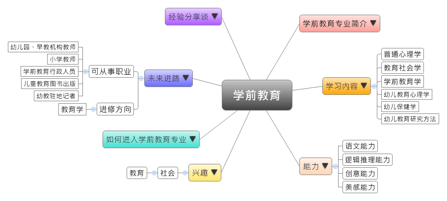
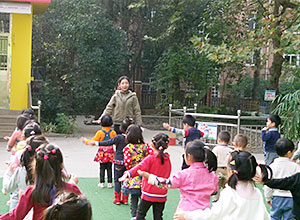

- 专业大观园
-

- 专业介绍
-
什么是学前教育专业？
家庭和学校的教育大大影响人类行为，尤其在幼儿时期的偏差行为如未受到导正，就易于导致长大素行不良。因此，学前教育十分重要。
凡是与幼儿保育和教育、儿童相关产业都是学前教育的范畴，幼儿卫生保健、社会工作也会被纳入其中。此外，学生在学前教育专业的培养过程中，也能学到执行教学方案时所需的相关技能，例如：童书、玩具设计、儿童音乐与戏剧创作等，以上皆是学前教育专业学生可再延伸发展的部分。

教师引导小朋友回答问题  老师在带领小朋友们做体操
- 学习内容
-
学前教育专业重点学习幼儿身心照顾、学前教育课程设计与带领、幼儿园管理等方面的相关知识及实用技能。
本专业兼容众多学科，如教育心理学、社会学、统计学与政治经济学，在各学科中汲取所需，聚焦在学理后的实用性。学前教育的主干课程有：普通心理学、教育社会学、学前教育学、幼儿教育心理学、幼儿保健学、幼儿教育研究方法……等。此外，亦有加入至幼儿园教学实习的实践环节，以让学生在毕业前更深入了解目前教学现场的实际状况。
本专业可以习得的知识与获得之能力、技能列点：第一，掌握学前教育、幼儿教育研究法、幼儿心里学等基本理论之知识；第二，具备观察、分析幼儿行为认知的能力；第三，具有能编写教案的基础能力。
- 能力
-
学前教育专业学生，需具备以下能力：
相关性向能力 说明 语文能力  口语表达清晰且浅显易懂
口语表达清晰且浅显易懂逻辑推理能力 掌握班级经营及师生互动
根据幼儿学习情况给予适当指导
设计系统性的课程帮助幼儿身体、情绪、性格发展创意能力 发挥创意设计课程，引发学习动机美感能力 带动幼儿游戏、唱歌及律动
制作精美教具，帮助幼儿专心学习
- 兴趣
-
若你对下列活动或事物有高度兴趣，可考虑进入学前教育专业学习：
社会 教育 与人沟通
指导他人学习
帮助与服务他人
倾听与了解他人
关心当前教育问题
了解人类行为与心理状态
- 如何进入此专业
-
下面列举开设学前教育专业的重点大学院校：
- 未来进路
-
可从事职业
随着国家大力推动学前教育，幼儿园与早教机构林立，使当前社会幼师缺乏，因此学前教育专业毕业生主要走向幼教者占多数。在工作职场上皆能发挥幼儿教学、观察分析等专长：
行业 职业 幼儿园、早教机构 幼教老师、幼儿园园长 小学 教师 行政机关 学前教育行政人员 儿童教育图书出版 销售代表 广播、电视 幼教驻地记者 进修方向以下列举学前教育专业毕业生可以继续修读之学科门类及一级学科：
学科门类 一级学科 硕士点 教育学 教育学学前教育学、教育学原理、课程与教学论、教育史、比较教育学、高等教育学、成人教育学、职业技术教育学、特殊教育学、教育技术学
- 经验分享谈
-
“开放教育”的创办者——宁征
宁征是“开放教育”的创办者，致力于推广开放教育。从青岛幼儿师范学校毕业后，宁征分配到流亭镇作幼教辅导员。面对的是条件不佳的幼儿教育环境，全镇15所幼儿园，不仅硬体设备仅有土台子、水泥板凳，园长的管理水平和教师的业务素质亦是参差不齐，总体偏低。年仅20岁的他，为了弥补自己的阅历不足，希望更能发挥专业来为全镇的幼儿教育打下良好基础，他拼命读书以提升自己。
而在幼教管理的实际做法上，宁征一方面改善办园条件、提高教师物质待遇，另一方面则积极兴办园长的管理培训和教师的专业培训。他利用晚上自行准备材料，白天则举行一场场的讲座与示范课，不断规范管理，打破了“随意性”和“格式化”教育，提高了办园质量。在乡镇经过十年努力，他指导的8所幼儿园跨入青岛市“一类园”的行列。
1992年，宁征被调到青岛幼儿师范第二附属幼儿园当园长，他积累了较丰富的管理经验，之后也陆续担任青岛市实验幼儿园、八大峡小区红山峡路分园等五所幼儿园的招生开园工作。宁征认为，开放的时代，需要开放的教育，他在教学工作上充分尊重教师的自主权，允许教师根据不同幼儿的发展水平来选择活动内容、设计主题方案以及运用适当的教学手段。宁征创办的幼儿园办园成果显着，如今已成为享誉国内外的知名优质幼教园所，许多家长慕名将孩子送到此接受良好教育。
回顾创建5处园时披星戴月不断加班的艰辛历程，宁征不以为苦，他认为不过是尽了本分，做了能力所及的事。他认为办园的最大收获不在其他，而是锻炼、考验并提升了自己，他从过程中凭借着多年幼教经验累积的智慧，定位好自己的人生价值坐标。【资料来源：“开放教育”的探路者 ——记山东省青岛市实验幼儿园园长宁征.中国教育新闻网,2012-07-04.】